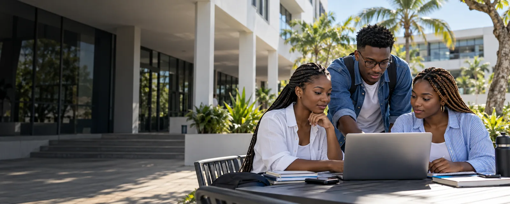
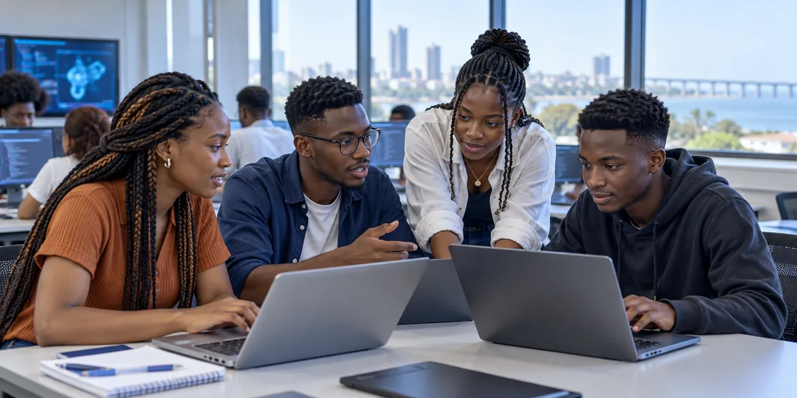

MAPUTO · MOÇAMBIQUE
O futuro
aprende-se aqui.
Conhecimento que transforma. Tecnologia que aproxima. Uma educação preparada para o amanhã.
QUEM SOMOS
Muito mais do que ensinar.
Preparar para a vida.
Unimos rigor académico, experiência prática e acompanhamento próximo para ajudar cada estudante a encontrar o seu caminho.
A SUA PRÓXIMA ETAPA
Encontre o seu próximo passo.
Programas pensados para aprender, experimentar e avançar.
PORQUÊ VÉRTICE
O que nos torna Vértice.
VÉRTICE CONNECT
Toda a vida académica
num único lugar.
Mais simples. Mais próximo. Mais seu. Uma experiência digital pensada para a comunidade académica.
Consulte horários, resultados e documentos com clareza.
organizado.
O teu futuro
sempre contigo. ♡
ADMISSÕES
Começar é simples.
Quatro passos para abrir o próximo capítulo.
VIDA NO CAMPUS
Há um mundo para viver aqui.
Um espaço para aprender, criar e crescer em conjunto.
Transformar amanhã.

A NOSSA COMUNIDADE
Histórias que nos inspiram.
Percursos diferentes. Uma vontade comum de crescer.
CORPO DOCENTE
Ensinar é acompanhar o crescimento.
Conhecimento próximo, dentro e fora da sala de aula.
NOVIDADES
Acontece no Vértice.
Ideias, encontros e oportunidades para a comunidade.
PERGUNTAS FREQUENTES
As suas perguntas,
respondidas.
Reunimos o essencial para começar com confiança. Para detalhes sobre o seu caso, fale connosco.
Ainda tem dúvidas?O PRÓXIMO PASSO É SEU
O seu próximo capítulo começa aqui.
Junte-se a uma comunidade que acredita no seu potencial.